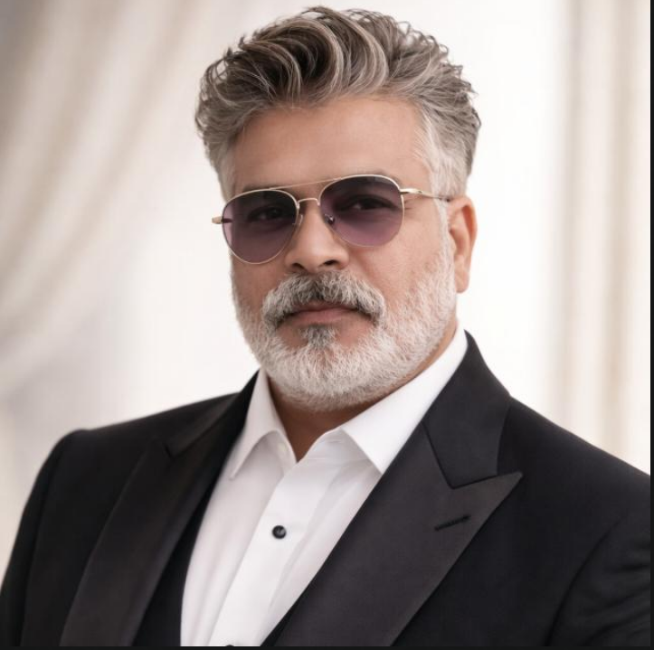

OUR TEAM
Meet the professionals behind Shakya Learning & Development Pvt. Ltd.

Suraj Kumar
Founder & CEO
Suraj Kumar is a Corporate Trainer, Facilitator, and Learning & Development Professional with more than 20 years of experience across corporate training, banking operations, customer service, quality management, and workforce capability development.
He has successfully led training, coaching, mentoring, and employee engagement initiatives, helping organizations strengthen leadership capability, workplace effectiveness, customer experience, and employee performance.

Anita Pathak
Director
Anita Pathak provides strategic guidance and leadership support to the organization. She is committed to strengthening organizational effectiveness and supporting initiatives that contribute to sustainable growth and client success.

Santosh Pathak
Director
Santosh Pathak plays a key role in organizational planning, stakeholder engagement, and business development initiatives. His focus is on building strong partnerships and supporting the long-term vision of the organization.
.png)
Shashank Mishra
Technology & Operations Lead
Shashank Mishra leads technology and operational initiatives. He supports digital operations, process efficiency, and technology-driven solutions that enhance organizational effectiveness and client experience.